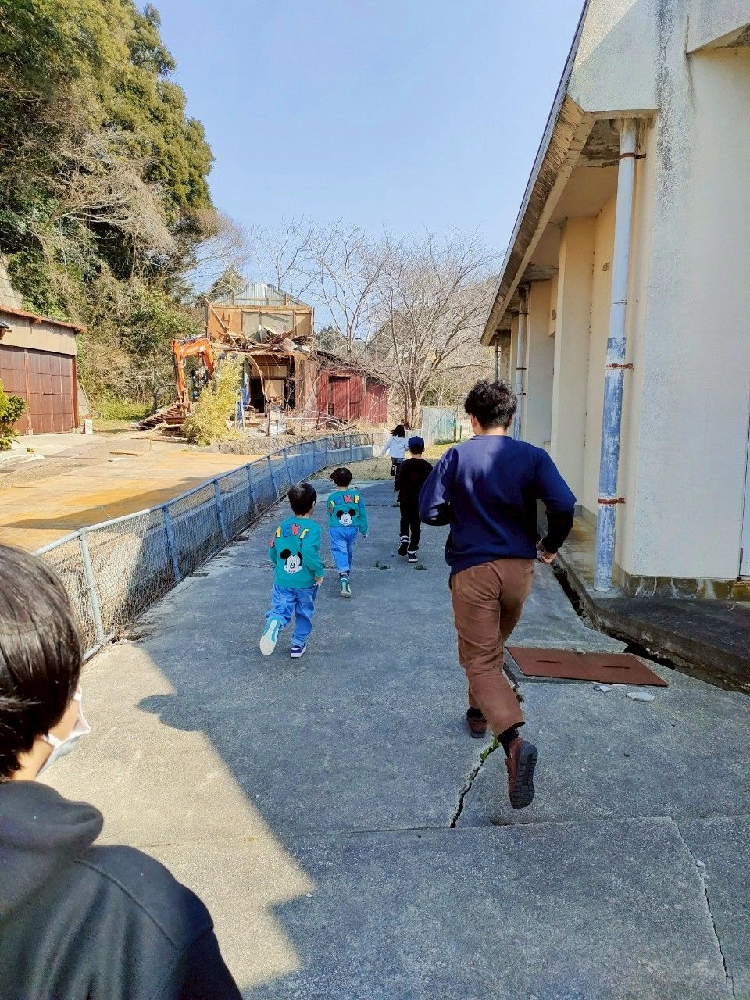
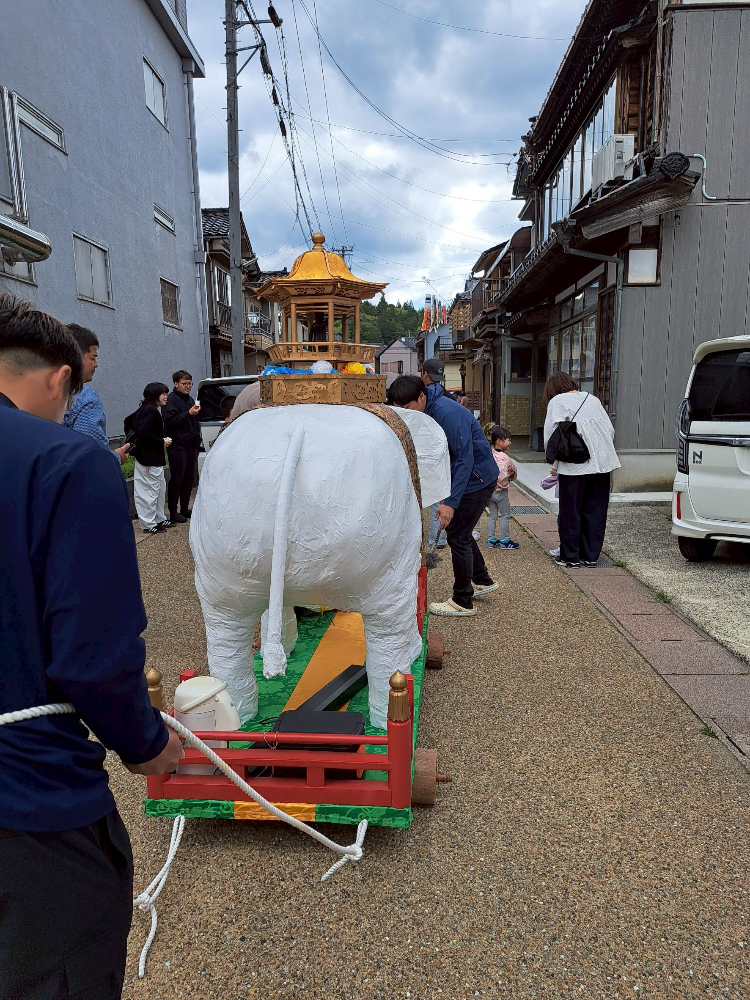
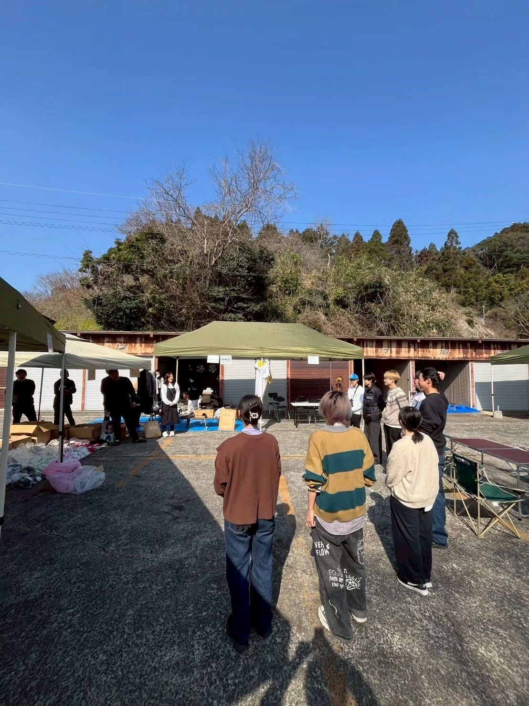
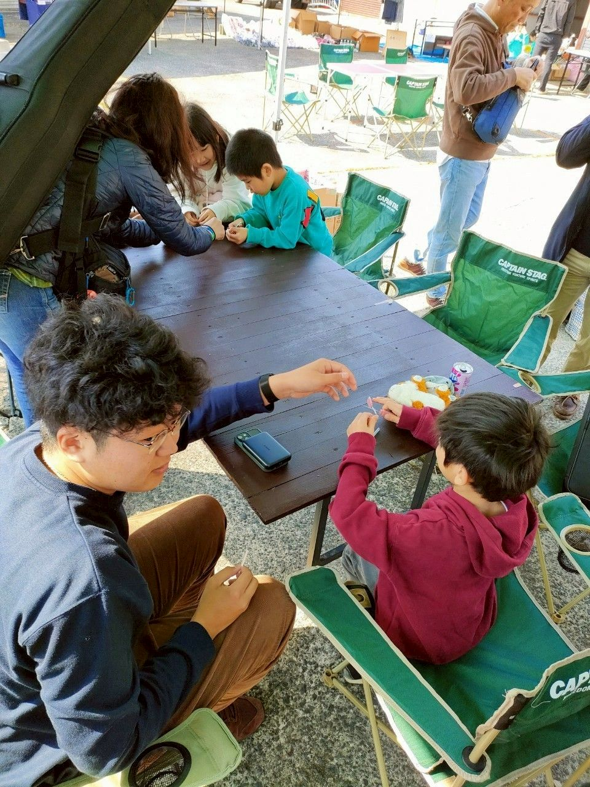

【報告】 6月14日〜15日に4名で能登活動を行いました。
1日目は、門前町深見地区や鹿磯漁港を視察するとともに、地元のジェラートや昼食には...
続きを読むつなぐマーケットは能登町宇出津の大乗寺のお寺で定期的に開催される地域イベントで人と人が繋がり続けられ、安らぎの場として開催されています。イベントでは、地域住民の方々が出店するほか、宇出津以外の地域から訪れて参加する方、そしてボランティアで関わる方もおり、訪れる人が1日のんびり過ごせるような温かい雰囲気が包まれています。私たちそよかぜも2024年9月から現在に至るまで継続的参加させていただいています。主に子ども向けに輪ゴム鉄砲作り、射的、なげなわなどを行い、楽しみながら交流しております。





1日目は、門前町深見地区や鹿磯漁港を視察するとともに、地元のジェラートや昼食には...
続きを読む